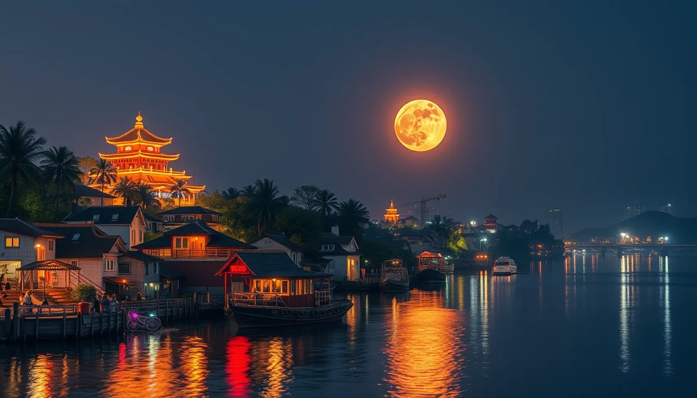

🌍 2024年全球最佳旅游城市

🇫🇷 巴黎 | Paris
2024年奥运会主办城市，艺术与浪漫的完美融合。这座"光之城"以其独特的建筑、艺术博物馆和美食文化吸引着全球游客。
城市亮点
- 2024奥运会举办地，体验全新的城市面貌
- 卢浮宫、埃菲尔铁塔等世界级地标
- 米其林星级餐厅和精致的法式美食
- 塞纳河游船，体验浪漫河岸风光
最佳旅行时间：4-6月或9-10月，气候宜人，游客相对较少
🇯🇵 东京 | Tokyo
传统与现代完美交融的国际大都市。从繁华的商业区到宁静的古寺，东京提供了丰富多彩的旅行体验。
城市亮点
- 体验世界领先的现代科技和潮流文化
- 探索浅草寺等传统文化景点
- 品尝正宗的日本料理和街边美食
- 感受独特的动漫和游戏文化
最佳旅行时间：3-4月赏樱花，10-11月观赏红叶
🇮🇹 罗马 | Rome
永恒之城，世界历史文化的瑰宝。每一条街道都诉说着悠久的历史，每一座建筑都展现着精湛的艺术。
城市亮点
- 参观世界闻名的古罗马斗兽场
- 探索梵蒂冈博物馆的艺术珍品
- 体验正宗的意大利美食文化
- 漫步于历史悠久的古罗马广场
最佳旅行时间：4-5月或9-10月，避开炎热的夏季
🇦🇺 悉尼 | Sydney
南半球最迷人的海港城市，将现代都市与自然美景完美结合。阳光、海滩与现代建筑构成独特的城市魅力。
城市亮点
- 参观标志性的悉尼歌剧院
- 体验邦迪海滩的阳光与冲浪
- 探索岩石区的历史风貌
- 乘坐游船欣赏海港风光
最佳旅行时间：3-5月或9-11月，天气温和适宜
🇨🇿 布拉格 | Prague
欧洲最美丽的城市之一，以其童话般的建筑和浪漫的氛围著称。2024年布拉格将推崇"慢旅游"理念，带来全新的旅行体验。
城市亮点
- 漫步于历史悠久的查理大桥
- 探索布拉格城堡的中世纪风貌
- 欣赏老城广场的天文钟
- 品尝捷克传统美食和啤酒
最佳旅行时间：5-6月或9月，天气适宜，游客较少